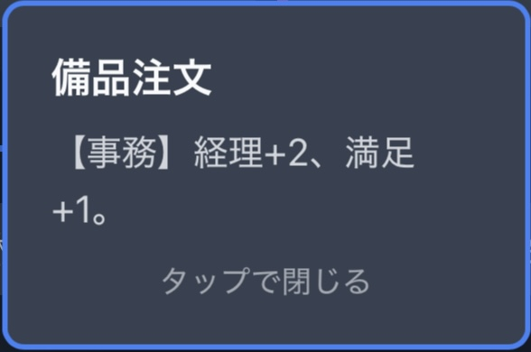
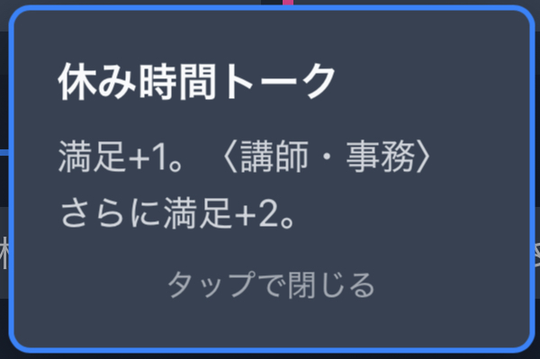

あなたは学習塾の教室長。
講師・事務スタッフと一緒に、体験生の勧誘・授業・満足度向上・経理手続きをバランスよく進めて、春期講習を大成功させましょう！
1月下旬〜5月上旬までの8ターン（各ターン0.5ヶ月）を繰り返します。
カードは「動員」「教務」「応対」「庶務」の4区分あり、それぞれ対応するパラメータが向上します。
カードには配置条件や発動条件があるものも存在します。次のページで詳しく見てみましょう。
カードを配置できる職種（室長・講師・事務）が限定されているカードです。
例：『備品注文』は【事務】にしか配置できません。（経理+2, 満足+1）
特定の職種に配置した時だけ効果が発揮（または変化）します。
例：『休み時間トーク』
室長に配置 → 満足+1
〈講師・事務〉に配置 → 満足+3（話が盛り上がる！）
「満足」と「経理」不足による退塾者数を規定以下に抑えるのが最重要課題です。
⚠️ 注意！
片方のパラメータだけ高くてもダメです。
「満足」「経理」両方が15に達しないと退塾者が出ます。バランス良く上げましょう。
体験申込数を競います。目標は 10, 12, 15名の3段階。
春期終了時の生徒純増数 (入塾数) - (退塾数) を競います。
入塾させるには「体験」が必要。
退塾を防ぐには「満足」と「経理」が必要。
結局4項目とも必要です！
E〜S+の7段階評価。Cランク以上でクリア！
目指せS+「全社最優秀教室」！（開発チームはS+達成済みです）
画面最上部の情報エリアを活用して戦略を立てましょう。
準備ができたら、ゲームを始めましょう！